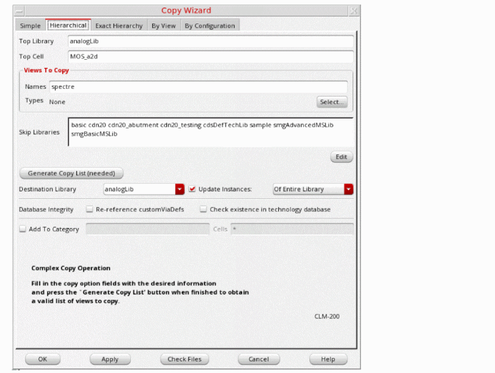
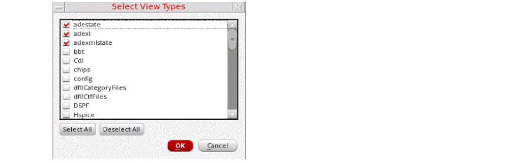

Copying a Hierarchy Using the Copy Wizard
To copy a hierarchy of libraries, cells, and views into another library, follow these steps:
- Select a library, cell, or view.
-
Choose Edit – Copy Wizard.
The Copy Wizard form appears. -
Select the Hierarchical tab.
- The selected library name appears in the Top Library field.
- If you selected a cell, the cell name appears in the Top Cell field.
- If you selected a view, the view name appears in the Views To Copy – Names field.
You can change any or all of these values.- If the Top Cell field is empty, type a valid cell name.
-
If the Views To Copy – Names field is empty, type one or more (space-separated) names of views to copy. You can also type a valid filter string. For example,
s*(to indicate all view names beginning with s) or*(to indicate all views). Alternatively, use the Select button to select specific view types.
-
In the Skip Libraries field, add or remove names of any libraries whose cellviews you want to skip or to copy into the destination library. Alternatively, click the Edit button to open the Skip Libraries Editor dialog box and select the libraries to skip.
Cellviews in the libraries named in the Skip Libraries field are not copied and continue to reference their original library. (You probably want to skip libraries such as reference libraries of contacts, vias, and so forth.) Use theskipLibsTextenvironment variable to include the list of libraries in the Skip Libraries field. -
Click Generate Copy List.
The cellviews to copy appear in the copy list. By default, all cellviews are selected for copying.
If the Library Manager finds referenced items whose view names are not specified in the Views To Copy field or whose libraries are called out in the Skip Libraries field, the View File Summary window appears. -
In the View File Summary window, click Yes.
The list of cellviews not included in the copy list appear on the Referenced Files form. -
If you want to move one or more of the referenced files to the copy list, do one of the following:
- In the Copy list box, click No to change the entry to Yes for each referenced file you want to move to the copy list, then click OK.
- Click Copy All Files to move all referenced files to the copy list.
The specified cellviews appear in the copy list on the Copy Wizard form. - In the Destination Library field, type or select a new destination library name to copy the selected cellviews to a different library.
- Select the Update Instances check box and select one the required option from the drop-down list.
- Select the options in the Database Integrity field if you want to update and validate technology data in the destination library after the copy command is completed.
- Click OK.
Library Manager copies the cells in the copy list to the destination library. If the destination library is the same as the top library, Library Manager copies the cells or views to the new names you specified.
If the destination library does not already exist, the New Library form appears, where you can specify a location and design management option for the new library.
Related Topics
Copy Wizard Form (Hierarchical)
Adding a Copied Cell to a Category
Selecting Text in the Copy Wizard
Return to top